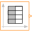
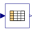
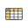

ExtrapolationEnumeration defining the extrapolation of table interpolation |
Enumeration Literals (4)
| HoldLastPoint |
Hold the first/last table point outside of the table scope |
|---|---|
| LastTwoPoints |
Extrapolate by using the derivative at the first/last table points outside of the table scope |
| Periodic |
Repeat the table scope periodically |
| NoExtrapolation |
Extrapolation triggers an error |
Used in Components (6)
|
Modelica.Blocks.Sources Table look-up with respect to time and linear/periodic extrapolation methods (data from matrix/file) |
|
|
Modelica.Blocks.Sources Generate a Boolean output signal based on a vector of time instants |
|
|  |
Modelica.Blocks.Sources Generate an Integer output signal based on a table matrix with [time, yi] values |
|
Modelica.Blocks.Tables Table look-up in one dimension (matrix/file) with one input and n outputs |
|
|  |
Modelica.Blocks.Tables Table look-up in one dimension (matrix/file) with n inputs and n outputs |
|  |
Modelica.Blocks.Tables.Internal Base class for variants of table look-up in two dimensions |